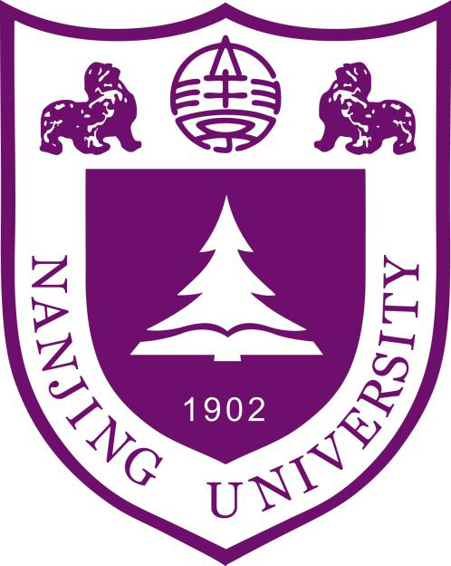
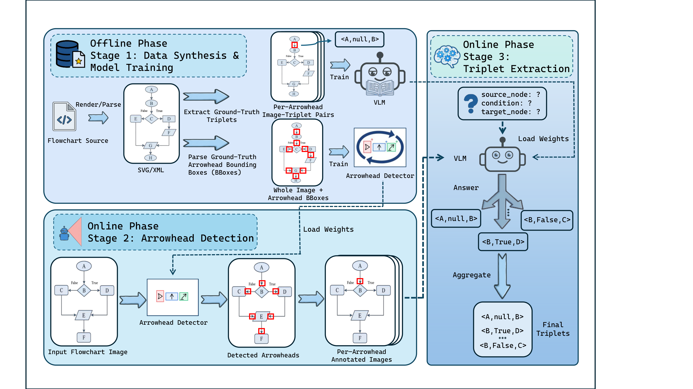

合成数据与模型训练
解析原生流程图文件，自动获得箭头头部框与图像—三元组对，用于微调检测器和视觉语言模型。

EMNLP 2026 Main · 已接收论文
TRACE: Triplet Recovery via Arrowhead-Centric Extraction for Flowchart Understanding
以箭头头部为视觉锚点，保留完整流程图作为上下文，逐条恢复「起点、条件、终点」三元组，再汇聚成可追溯的有向图。
1 南京大学 2 联想（北京）有限公司
1 / 研究动机
密集流程图中的细小连线，容易被遗漏或反转。
输入流程图图像输出(起点, 条件, 终点)每条输出都能定位到对应箭头。以上代表性结果使用 Qwen3-VL-4B；问答在 TextFlow 公开的评测子集上进行，具体设置见下文。
02 / 核心方法
细小连线和密集布局让整图抽取容易遗漏或反转边的方向。TRACE 在每份完整图像中只标记一个箭头头部，让模型集中读取指定连接，同时保留周围信息。
解析原生流程图文件，自动获得箭头头部框与图像—三元组对，用于微调检测器和视觉语言模型。
定位箭头头部并绘制高亮框。每次查询都使用完整流程图，保留全局上下文。
读取标记箭头对应的起点、条件和终点，将逐条输出汇聚成流程图的结构化表示。

交互示例 · 理解查询方式
下方示意图展示 TRACE 的查询方式。点击不同的边，蓝色高亮框随之移动，完整流程图始终可见。
此处为方法示意，输出预先设定，不调用在线模型。
03 / 实验结果
九个基准覆盖手绘图、常规流程图、具有层级结构的 BPMN，以及不同复杂度的生成图。下表比较相同骨干下微调后的 TRACE 与整图端到端抽取。
| 评测基准 | 端到端 F1 | TRACE F1 | 差值 |
|---|
精确匹配 F1（%），来源：论文表 2。两种方法均经过任务微调。此处展示论文报告结果。下载结果表
跨风格泛化
在八个基准上训练，测试被留出的第九个基准。TRACE 在其中八个上优于 E2E；CBD 是例外（83.31 对 83.66 F1）。
Qwen3-VL-4B，无 OCR 后处理。来源：论文附录 B、研究海报。
下游推理
| 方法 | FlowLearn | FlowVQA |
|---|---|---|
| Qwen3-VL-4B (ZS) | 66.83 | 62.03 |
| TextFlow + 真值文本 | 88.33 | 75.18 |
| TRACE + 工具调用 | 98.17 | 75.78 |
| 真值三元组（上界） | 100.00 | 78.46 |
推理骨干均为 Qwen3-VL-4B；TextFlow 输入真值 Mermaid 文本。公开子集包含 100 张 FlowLearn 和 197 张 FlowVQA 图像。来源：论文表 4。
04 / 多箭头批量查询
在同一张完整图像中标记 K 个箭头头部，一次请求 K 条编号三元组。K = 3 相比 K = 1 将宏平均延迟降低 39%，F1 仅下降 0.49 个百分点。
九个基准的宏平均，Qwen3-VL-4B，NVIDIA RTX 5880 Ada。E2E：78.39 F1、2.73 秒/图像。来源：论文表 10。
05 / 论文与开源资源
数据合成、检测器训练、VLM 微调、推理、评测与基于图的问答代码。
GitHub 仓库02完整方法、基线比较、消融实验、实现细节与局限性。
阅读 PDF03概览方法框架、跨风格泛化、下游问答和多箭头批量查询。
阅读 PDF04合成监督数据与箭头头部标注。当前 Zenodo 记录仍为受限访问。
查看访问说明@inproceedings{dong2026trace,
title = {TRACE: Triplet Recovery via Arrowhead-Centric
Extraction for Flowchart Understanding},
author = {Dong, Daozhu and Shi, Kaiwen and Si, Dan and
Hao, Xiaoyu and Liu, Tong and Zhang, Wenjie and
Cheng, Gong},
booktitle = {Proceedings of the 2026 Conference on
Empirical Methods in Natural Language Processing},
year = {2026},
note = {Accepted to the Main Conference; proceedings metadata forthcoming},
url = {https://github.com/nju-websoft/TRACE}
}论文已被 EMNLP 2026 Main Conference 接收。当前为临时论文引用；正式论文集发布后将补充页码、DOI 和 ACL Anthology 链接。